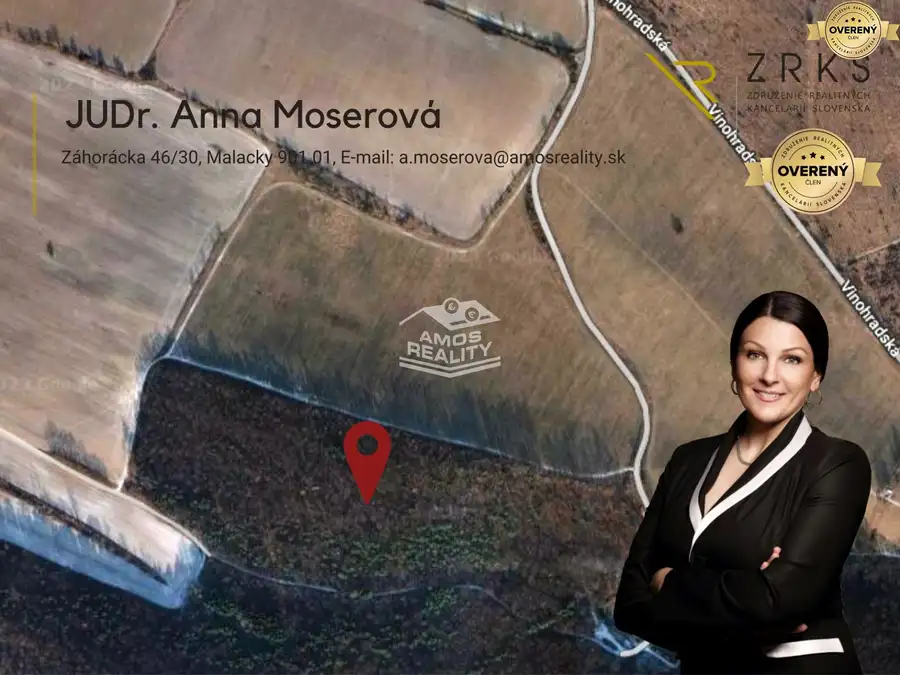
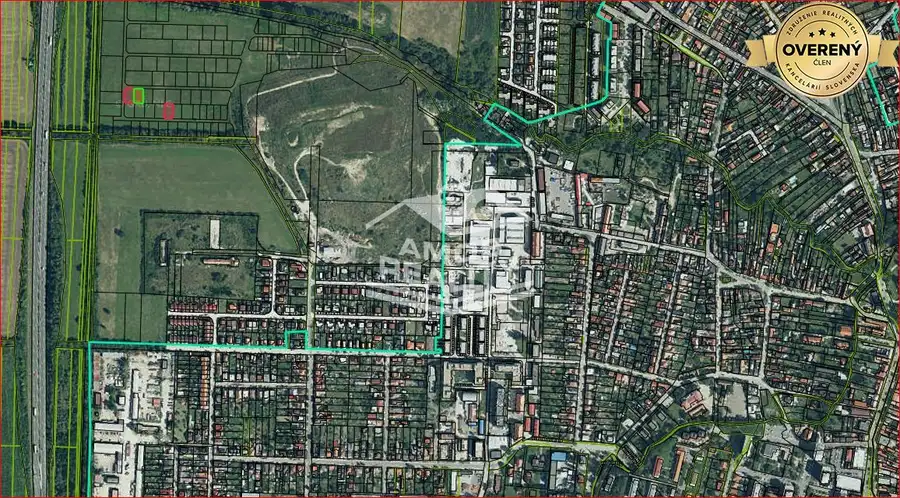
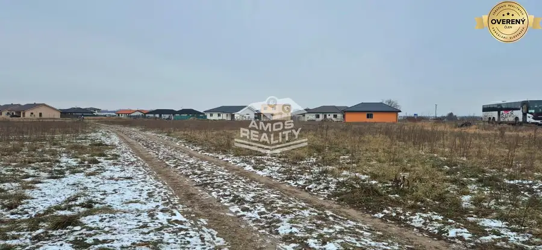

NA PREDAJ, pozemok vo výmere 1787 m2, IS pri pozemku k.ú. Pernek
Pernek
- Plocha1737 m²
- Vlastníctvoosobné
O nehnuteľnosti
AMOS reality v zastúpení majiteľa ponúka na predaj veľký 1787 m2 pozemok štvorcového pôdorysu na hranici zastavaného územia obce Pernek. Využitie pozemku ako lúky a pasienky s trvalo porastenými trávami alebo dočasne nevyužívaný pre trvalý trávny porast. Sklon terénu je 12°-17 °, orientácia juhozápadná. Oblasť spadá pod CHKO Malé Karpaty.
K pozemku vedie spevnená príjazdová cesta. Okolie pozemku lesnaté s rekreačnými chatkami. Na hranici pozemku sa nachádza IS (voda,elektrina a plyn), voda zabezpečená aj vlastnou studňou.
V prípade spolupráce s AMOS reality s.r.o.:
- oslobodení ste od poplatkov spojených s predajom nehnuteľnosti,
- financujeme: právny servis – spracovanie zmluvy o budúcej zmluve, kúpnej zmluvy, návrhu na vklad
do katastra, poplatky za výpis z listu vlastníctva a základný správny poplatok za návrh na vklad do
katastra nehnuteľností,
- bezplatne ponúkame služby hypotekárneho špecialistu SENIOR, ktorý Vám predloží minimálne tri
ponuky na financovanie cez banku a zabezpečí Vám dojednanie najlepších podmienok v banke,
- zabezpečíme výber súdneho znalca ako aj geodeta z nášho tímu
- preveríme stav nehnuteľnosti z katastrálneho hľadiska
- v prípade potreby predaja Vašej nehnuteľnosti, Vám poskytneme bezplatné poradenstvo,
- zabezpečíme služby interiérového a exteriérového architekta,
- vyriešime kompletný realitný ako aj finančný servis pre Vás bezstarostne, pohodlne a
bezpečne so zárukou vysokej odbornosti a diskrétnosti
Parametre
| Rozloha pozemku | 1787 m² |
|---|---|
| Celková rozloha | 1737 m² |
| Vlastníctvo | osobné |
| Orientácia | juhozápadná |
| Terén | mierny svah |
| Prístupová cesta | asfaltová cesta |
| Dátum zverejnenia | 17. 5. 2023 |
Kde to je
Mohlo by Vás zaujímať

Pozemok3 53 970 €Lesný pozemok v obci Lozorno, 30 € / m2, vhodný na bývanie v prírode Lozorno 1799 m² AMOS reality so súhlasom majiteľa ponúka na predaj krásny rovinatý lesný pozemok vo výmere cca 1800 m2 v osobnom vlastníctve. Prístupová cesta k…
Pozemok3 51 500 €NA PREDAJ 3 pozemky v Stupave- podnikateľské a výrobné aktivity Stupava 515 m² AMOS reality s.r.o. s poverením majiteľa ponúka na predaj 3 pozemky v k.ú.: Stupava nachádzajúce sa podľa územného plánu v časti F9-B-08. Regulatív:…
Pozemok3 919 800 €Investičná príležitosť, stavebný pozemok 4088 m2, obec Zohor, okres MA Zohor 4088 m² Na predaj rozsiahly stavebný pozemok určený výhradne ako investícia, situovaný na okraji zastavaného územia obce Zohor, v smere na obec Láb. Pozemok…